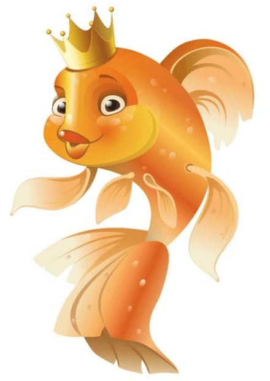

Боярская дума
Земский собор
приказы
Созывался лишь для утверждения уже подготовленных царём
проектов
Представительство низших слоёв населения стало
незначительным
территориальные
отраслевые
дворцовые
Ближняя дума
совет наиболее близких к царю деятелей
1654 г.
не подчинялись

Приказ тайных дел
Личная канцелярия государя
Контролировал другие приказные ведомства
Cостояла в это время из немногих доверенных лиц царя, не имевших иногда «думного» чина
Cоздавался для того, чтобы «царская мысль и дела исполнялись все по его хотению, а бояре и думные люди ни о чём о том не ведали»
Александр Михайлович Тишайший
1645-1676
XVII век — век расцвета приказной системы
Количество именных царских указов без боярского приговора